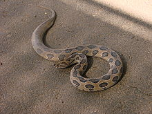
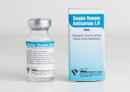
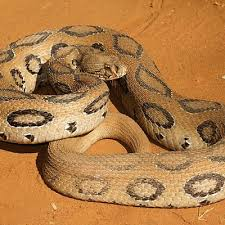

The Russell's viper, also known as the daboia, is a highly venomous snake found in South Asia. It is one of the "Big Four" snakes responsible for most snakebite deaths in India. Despite its dangerous reputation, the Russell's viper is a fascinating creature with unique characteristics and a significant impact on human health.
The Russell's viper is a large, heavy-bodied snake that can grow up to 5 feet long. It has a distinct triangular head, large nostrils, and small eyes with vertical pupils. Its body is covered in scales with a pattern of dark, triangular markings. The color of the snake varies depending on its location, but it is typically a reddish-brown or gray color.
The Russell's viper is widely distributed throughout South Asia, including India, Pakistan, Bangladesh, Nepal, Sri Lanka, and parts of Southeast Asia. It prefers to live in open areas, such as grasslands, agricultural fields, and scrub forests.It is often found near human settlements, which increases the risk of snakebites.
.jpeg) Behavior and Ecology:
Behavior and Ecology:
The Russell's viper is a nocturnal snake, meaning it is most active at night. It is a carnivore and feeds on small mammals, birds, and reptiles. The snake is a sit-and-wait predator,meaning it lies in wait for prey to come within striking distance. It has a powerful venom that can cause severe pain,tissue damage, and even death.
The venom of the Russell's viper is a complex mixture of toxins that can cause a variety of symptoms, including pain, swelling, bleeding, and organ damage.In severe cases, the venom can lead to kidney failure and death.Antivenom is available to treat Russell's viper bites, but it must be administered promptly to be effective.
Conservation Status;The Russell's viper is not currently listed as endangered, but it is facing threats from habitat loss and overhunting. The snake is often killed by humans due to fear and misunderstanding. Conservation efforts are needed to protect this important species and reduce the risk of snakebites.
 THE END LEARN MORE